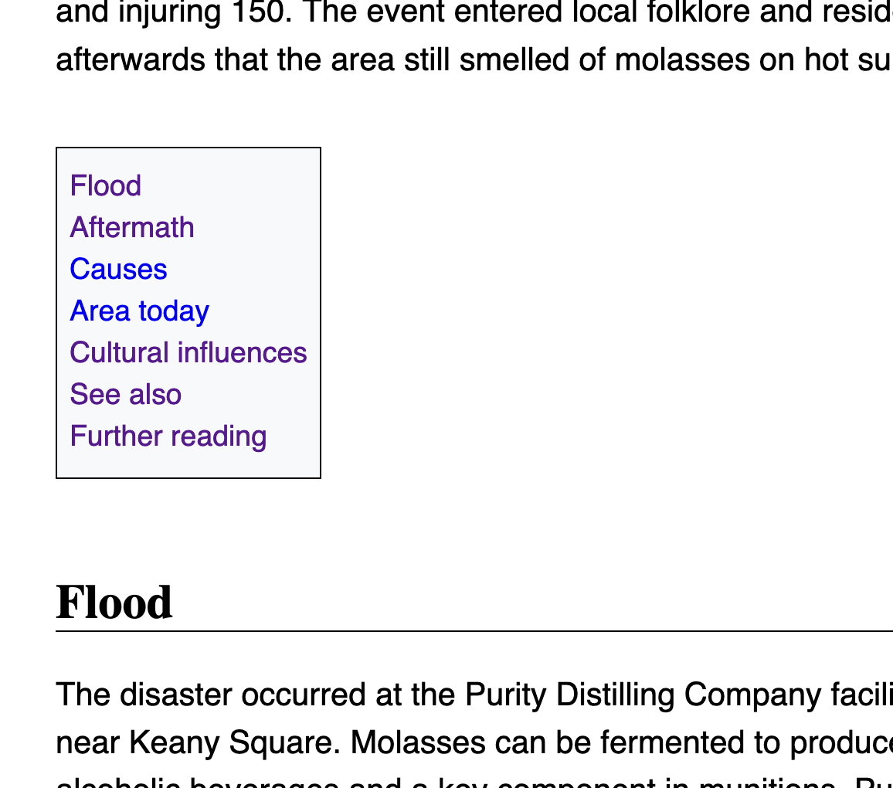
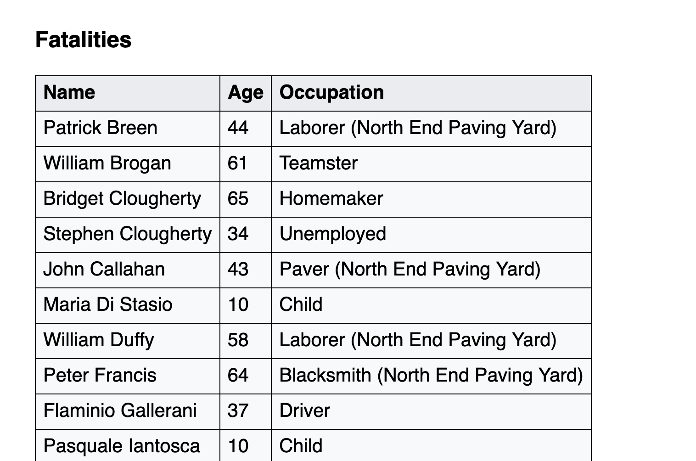
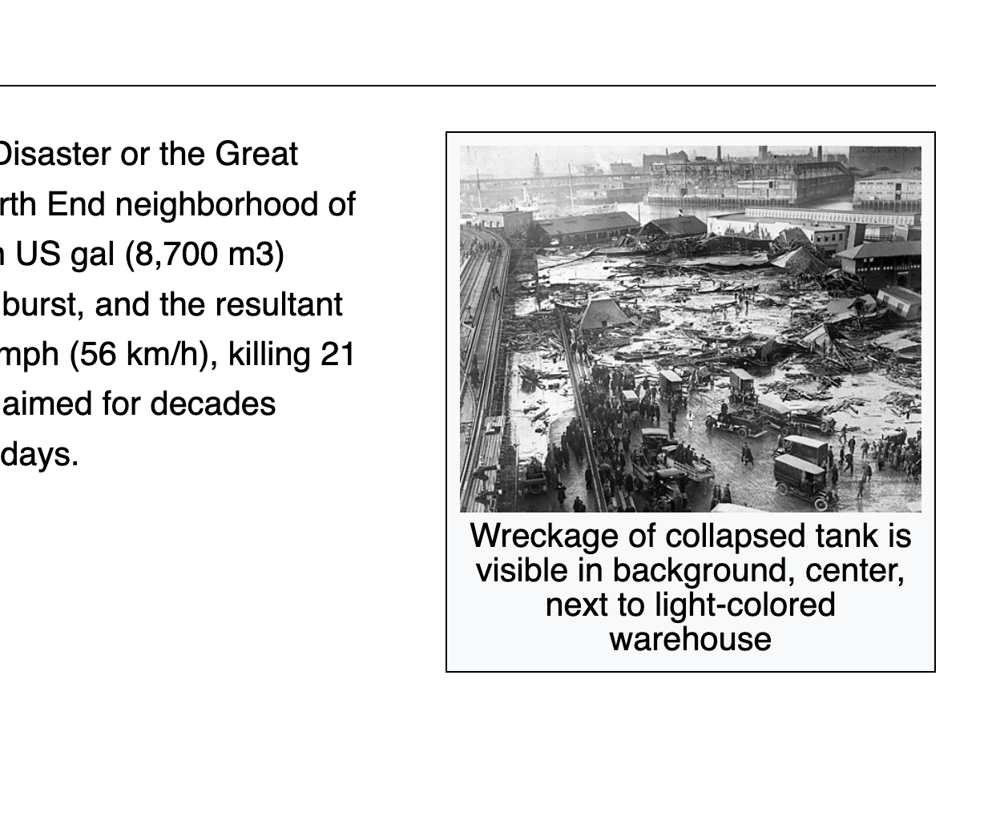
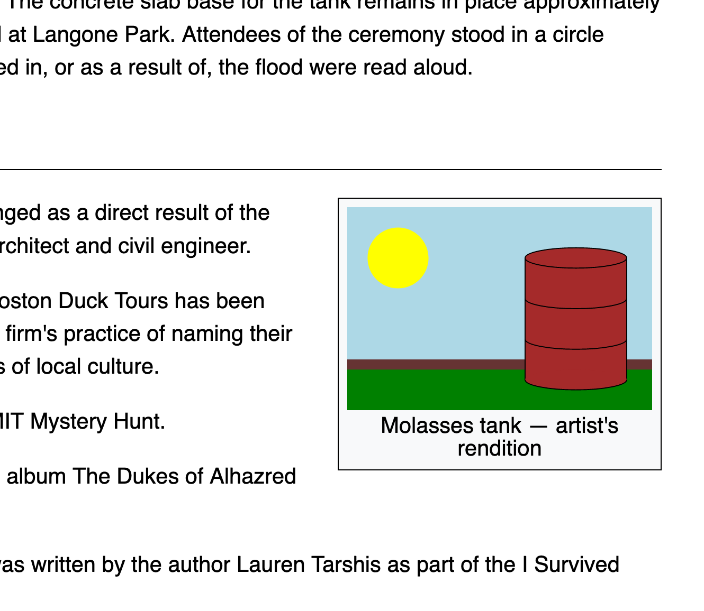
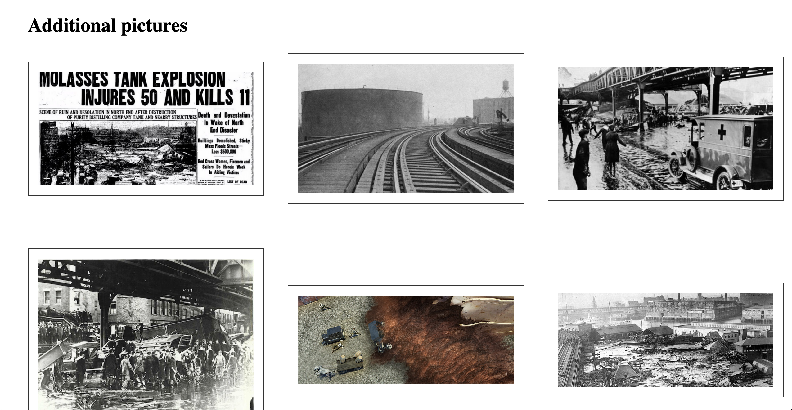
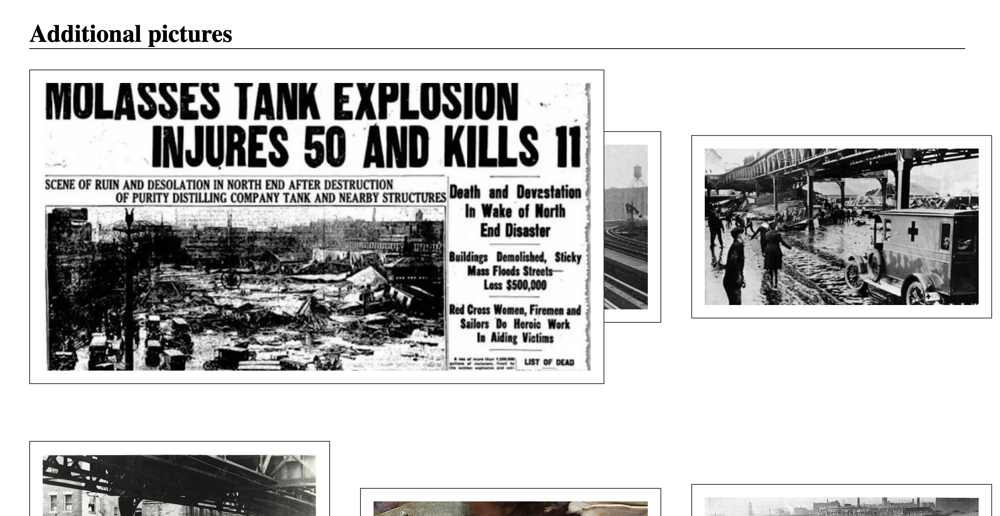
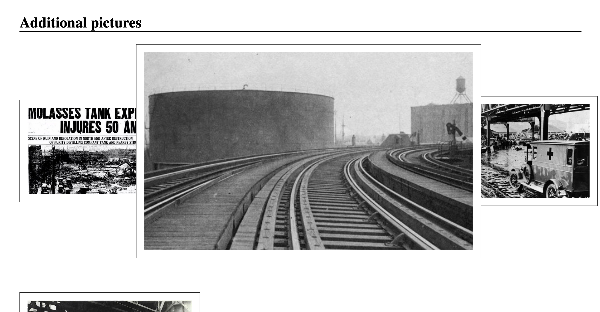
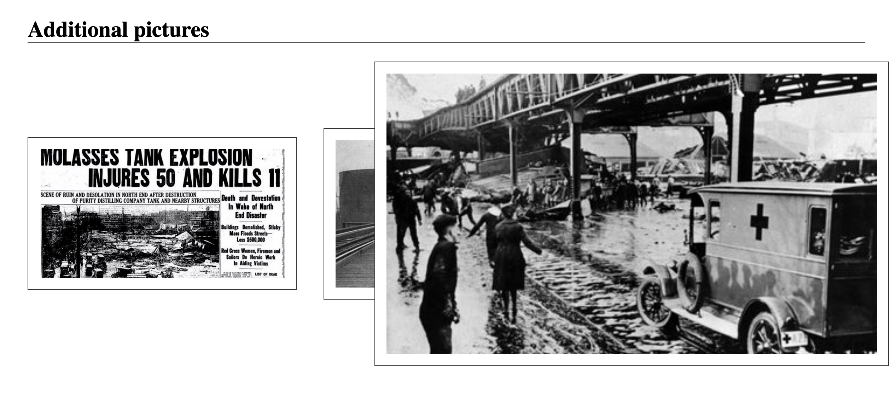

This homework is to be done in teams of two. You're welcome to discuss with other students, but all submitted work must be original and your own. If you use a solution from another source you must cite it — this includes when that source is someone else helping you.
Link to a homework1.zip file containing an HTML document and associated images used as a starting point.
The file molasses.html in the .zip file is a very basic HTML documenet holding a simplified version of the Wikipedia page on the Great Molasses Flood of Boston. (Not a joke.)
Your task: make it pretty, in a way that replicates roughly the formatting of Wikipedia proper. You do not have to make it pixel perfect.
Add a margin of 48px around the whole document
Make the font size for the whole document larger than the browser default. (Make it bigger by 30% or something close.)
All text should be sans-serif, except for headers at level 1 and 2.
All text should be spaced so that there is half a line's height between each line. (Hint: look up the line-height property.)
Make all block quotations in italic.
Headers should be separated by 48px from the text above it.
The list in the See also section should use square bullets. (Hint: lookup the list-style property.)
Headers at level 1 and level 2 should have a line underneath them that goes all the way to the right of the screen.
I clearly can't give you a link to a page that shows you what I want. Instead, here's a PDF printout of way I want the page to look.
The PDF also contains the result of questions 2, 3, 4, and 5 below.
Read up on the anchor element.
Add links to the three list items in the See also section of the document. Make them links to the corresponding Wikipedia page.
Make the items in the Table of contents list that's after the first paragraphs internal links to the various sections of the document. (Hint: see Linking to an element on the same page on the Anchor element documentation.)
Style the table of content so that it has no bullets on each list item, and so that the entire table of content has a border and such that the background has color f8f9fa. (See the PDF.)
Style all links so that they do not have an underline, except when you're hovering over them. (Hint: See the :hover pseudo-class.)

Read up on HTML tables.
Replace the preformatted section in the document containing the table of fatalities by a bona fide HTML table.
Style the table with an overall border and each cell itself bordered. Put a background color to the table, with color eaecf0 as the background color for the header, and f8f9fa as the background color for the rest of the table.
Make sure the header names are left aligned. (Some browsers will center them.)

Read up on the float property.
Float all four images in the text to the right of the document, and make sure they're all a reasonable consistent size.
Put a centered caption under each image. The caption to use is in a comment underneath each image in the source of the document. (Hint: see the figure element for one way to do that.)
Style the image so that there is a border at 4px distance from the image and caption.

Read up on SVG -- up to and including the Fills and Strokes section at least.
Create an SVG image manually within the HTML document that vaguely relates to the topic at hand (or not). Make sure it contains a few different shapes.
Float that SVG at the top and on the right of the Cultural influences section, add a caption, and style it just like all the other images on the the page after you've done question 4.

Read up on Flexbox. I keep the following handy Flexbox cheatsheet bookmarked on my work laptop. Flexbox is your best friend in modern frontend development.
Use flexbox to put your document in two columns - see this PDF for what I mean. Note that the level 1 header is not part of the two columns, and that images are floated within their columns.
Make sure there is some gutter space between the two columns. Use your judgment to make it look pleasant.
To use flexbox effectively, you need the ability to create an element whose sole purpose is to "group" other elements so that those elements are considered a single element. (Each column in a flexbox columnar layout needs to be its own element.) The best way to do that is to use a div element. Divs are flexbox's drinking buddies.
Read up on Grid. Here's a handy Grid cheatsheet.
Find six molasses-disaster related pictures online.
Create a new section at the end of the document entitled Additional pictures, and make sure that you add the section to the table of contents.
In that section, create a grid of three pictures over two rows (using display: grid) where each picture takes a third of the screen's width, and is centered within its grid cell both horizontally and vertically.
Put a border around each picture at some distance (I used 16px) from the picture proper.
Separate the pictures from each other in a reasonable way (I used 72px distance).
Here's a partial snapshot of what I have:

Make it so that when you hover over one of the picture, it blows up to twice its size.
Moreover, and this is the slightly challenging bit: I want the blown-up picture to remain within the screen frame. Thus, the pictures in the left column should blow up more towards the right, the pictures in the middle should blow up in a centered way, and the pcitures on the right should blow up towards the left. (Hint: look at the position property.)
No JavaScript. Here's what I have, when I hover from left to right on the first row:


